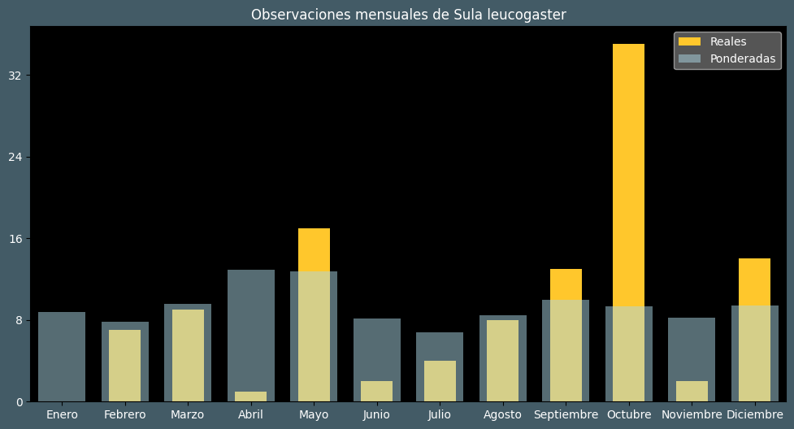

Observaciones por mes
Observations por hora

| Idioma | Nombre |
|---|---|
| Afrikaans (af) | Bruinmalgas |
| Arabic (ar) | أطيش بني |
| Belarusian (be) | ? |
| Bulgarian (bg) | Белокорем рибояд |
| Catalan (ca) | Mascarell bru |
| Chinese (zh) | 褐鲣鸟 |
| Chinese traditional (zh-TW) | 白腹鰹鳥 |
| Croatian (hr) | Smeđa bluna |
| Czech (cs) | Terej žlutonohý |
| Danish (da) | Brun sule |
| Dutch (nl) | Bruine gent |
| English (en) | Brown booby |
| Estonian (et) | Pruunsuula |
| Finnish (fi) | Ruskosuula |
| French (fr) | Fou brun |
| German (de) | Weißbauchtölpel |
| Greek (el) | ? |
| Hebrew (he) | סולה לבנת-בטן |
| Hungarian (hu) | Barna szula |
| Icelandic (is) | Brúnsúla |
| Indonesian (id) | Angsa-batu coklat |
| Italian (it) | Sula fosca |
| Japanese (ja) | カツオドリ |
| Korean (ko) | 갈색얼가니새 |
| Latvian (lv) | Brūnā sulla |
| Lithuanian (lt) | Baltapilvis padūkėlis |
| Maceodnian (mk) | ? |
| Malayalam (ml) | ? |
| North_sami (se) | Ruškessuvlá |
| Norwegian (no) | Brunsule |
| Persian (fa) | ? |
| Polish (pl) | Głuptak białobrzuchy |
| Portuguese (pt) | Atobá-pardo |
| Russian (ru) | Бурая олуша |
| Serbian (sr) | Smeđa bluna |
| Slovak (sk) | Sula hnedá |
| Spanish (es) | Piquero pardo |
| Swedish (sv) | Brunsula |
| Thai (th) | นกบู๊บบี้สีน้ำตาล |
| Turkish (tr) | Kara sümsük |
| Ukrainian (uk) | Сула білочерева |